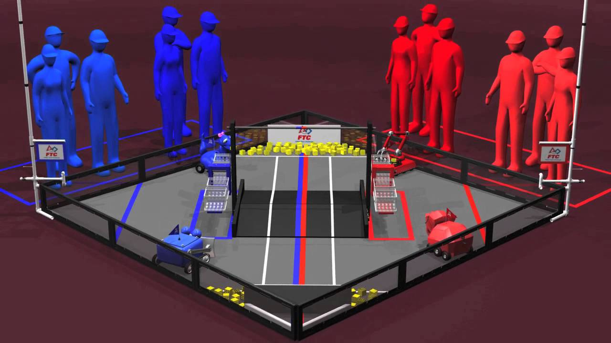
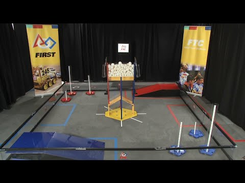
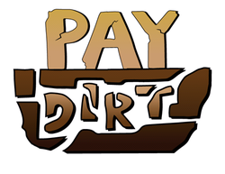

FTC 2013-2014

FTC was the first robotics competition that I participated in, I worked alongside Nathan Vaughn and others in programming the LabVIEW code for the robot. The competition was perhaps my most memorable robotics/programming related thing I did in all of my high school career because it is what got me invested in programming. It really started to shape my passion in programming and robotics, which would later turn towards a more specific field of computer science and even further into artificial intelligence.
FTC 2014-2015

I also participated in FTC 2014-2015 along with many friends. FTC 2014-2015 holds a special part in my memories from high school because I became a lot closer with a lot of my team members and got out of my shell more this year than in the year prior. I made friends with Cole, Meriah, and Daniel during this year and participated a lot more in the team.
BEST Competition

The BEST competition of 2014-2015 was my favorite out of all them, because I was very heavily involved in both the design and programming of the robot. I ended up participating in the competition by being the spotter, the person who helps the driver, on the 2 person team. I also ended up being one of the presenters who presented our robot and documentation to the judges. BEST also had a moment that I remember today, where we had to decide our strategy for the free round we managed to win a spot in due to our spectacular documentation team, we ended up going for a hail mary play trying to get one of the bonus objectives that would have guaranteed us a spot in the regional competition, however unfortunately we did not make it. The fact that we tried and took a chance however was really exciting and the moments we were down in the ring with time counting down are some of my fondest.